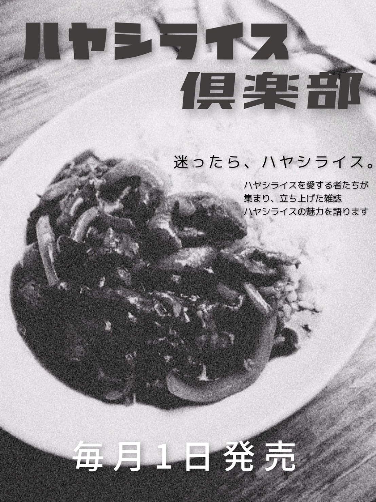
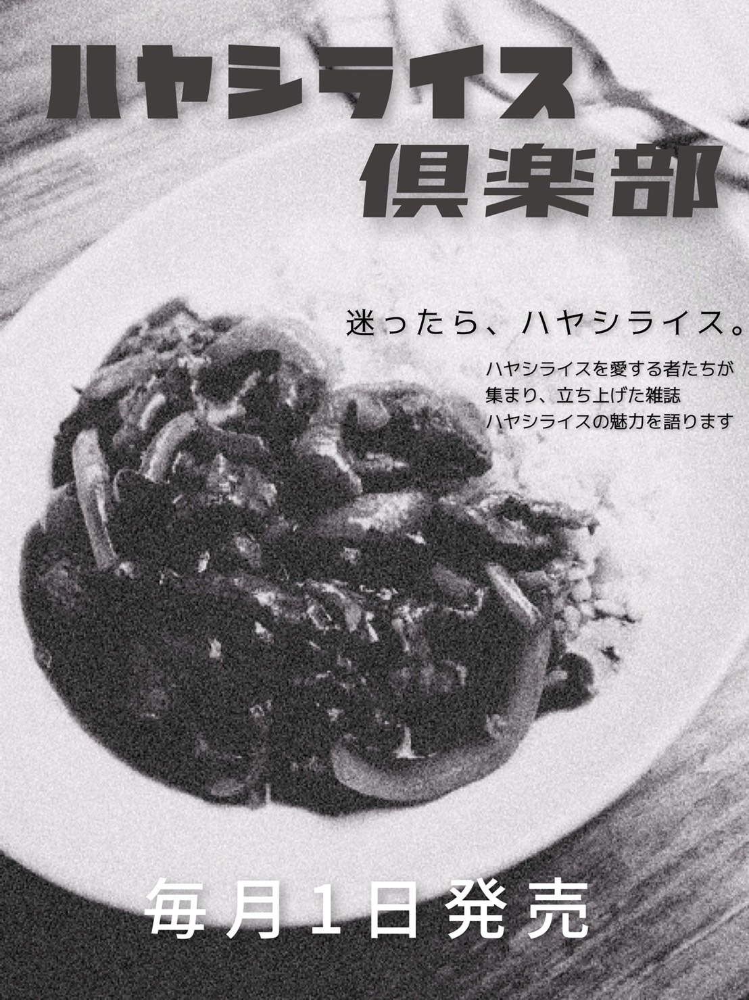

ハヤシライス、というギフト。
1940年にハヤシライス倶楽部が創設されてから、弊社は独自の進化を遂げてきました。
「過去も、現在も、未来も、大事にする」
その考えを伝えるべく、このページでは過去と現在のPR活動をまとめています。
1951年
初期はこのように、ポスターで宣伝していました。
ハヤシライスを愛すことは、この頃から変わっていません。
現在
現在、テレビや街中で放送されている映像です。
音楽にもこだわっています。
ホームへ戻る

1940年にハヤシライス倶楽部が創設されてから、弊社は独自の進化を遂げてきました。
「過去も、現在も、未来も、大事にする」
その考えを伝えるべく、このページでは過去と現在のPR活動をまとめています。
初期はこのように、ポスターで宣伝していました。
ハヤシライスを愛すことは、この頃から変わっていません。
現在、テレビや街中で放送されている映像です。
音楽にもこだわっています。